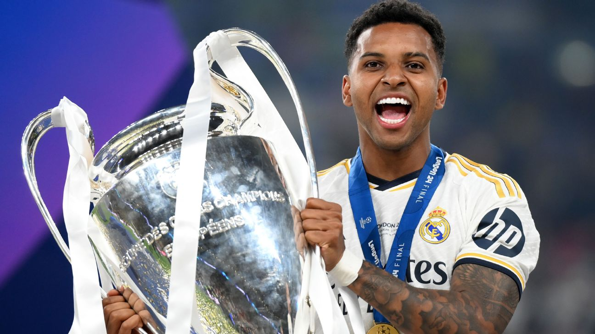

Rodrygo Goes es un futbolista brasileño conocido por su elegancia al jugar, su excelente control del balón y su madurez pese a su juventud. Desde temprana edad destacó en las divisiones menores del Santos FC, donde demostró una combinación única de velocidad, técnica y visión de juego que llamó la atención del fútbol europeo. Tras su llegada al Real Madrid, Rodrygo sorprendió rápidamente por su capacidad de adaptación. No tardó en convertirse en un jugador decisivo, especialmente en partidos importantes de Champions League, donde ha marcado goles fundamentales que lo han consolidado como un futbolista de sangre fría y enorme personalidad.
Su estilo de juego se caracteriza por sus movimientos inteligentes, su habilidad para encontrar espacios y su capacidad para desequilibrar tanto por banda como por el centro. Es un jugador versátil, capaz de participar en la creación de jugadas, asistir a sus compañeros o finalizar con precisión en el área rival. Además de su talento ofensivo, Rodrygo destaca por su disciplina, humildad y mentalidad competitiva. Su crecimiento futbolístico ha sido continuo, y cada temporada demuestra que está preparado para asumir un rol protagónico. Con su calidad y actitud, Rodrygo se perfila como una de las grandes figuras del fútbol mundial en los próximos años| Dato | Información |
|---|---|
| Fecha de nacimiento | 9 de enero de 2001 |
| Club actual | Real Madrid |
| Posición | Extremo / Delantero |
| Número | 11 |
| Curiosidad | Marcó un hat-trick perfecto en Champions con solo 18 años. |
| Más información | Mas información de Rodrygo Goes |
| @rodrygogoes |